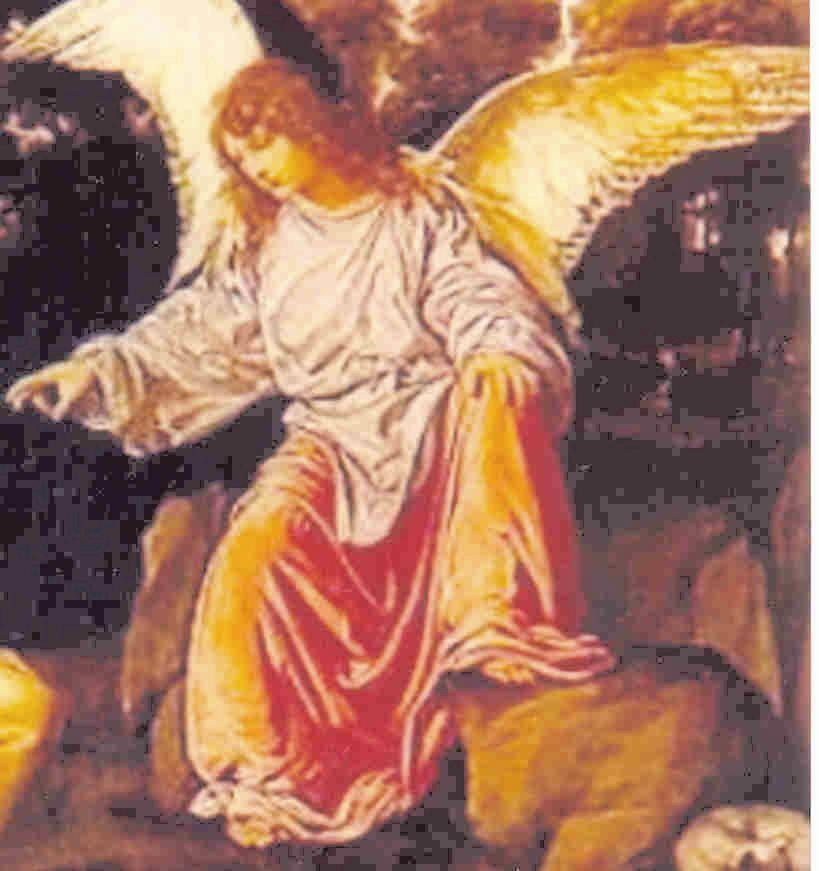
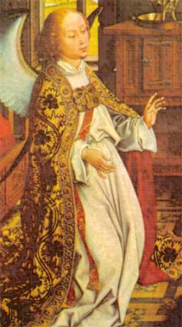
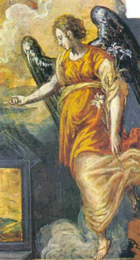
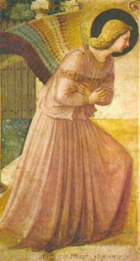
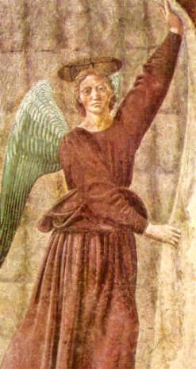
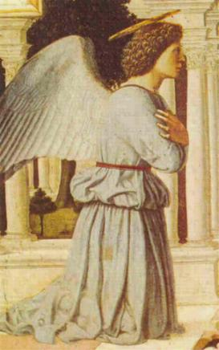
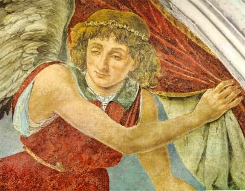

DEUS AMAVA A VIRGEM ANTES DE TODA A CRIAÇÃO
Para o Domingo – Primeira Lição (Capítulo 1)
Antes que fosse criada todas as coisas a SANTÍSSIMA TRINDADE já amava a VIRGEM MARIA.
Bênção - Defenda-nos ó VIRGEM MARIA, com Suas digníssimas súplicas a gratíssima SANTÍSSIMA TRINDADE. Amém.
O VERBO que São
João faz menção no Evangelho, era desde a eternidade UM com
DEUS, com o PAI e o 
Assim se fosse tirado uma dessas três letras U-N-O, não daria o mesmo resultado, porque não formaria a mesma palavra. Isto não acontece com as Três Pessoas, porque Elas possuem a Mesma Divindade, se alguma Delas fosse separada, se isto fosse possível, porque em SI elas são inseparáveis, a TRINDADE não ficaria carecendo de algo que a que foi separada tinha e as duas sozinhas não tinham. Impossível. Não é assim. Cada Pessoa é DEUS completo com todas as virtudes e poder, e cada Pessoa está intimamente e inseparavelmente unida as outras Duas.
Por isso mesmo, não podemos imaginar que o VERBO, o FILHO DE DEUS, assumindo a Natureza Humana, se afastou do PAI e do ESPÍRITO SANTO. Por outro lado, DEUS é invisível e assim para realizar a Missão Redentora, o FILHO teve que assumir a Natureza Humana e ter um Corpo igual aos homens, menos no pecado. Igualmente, como as Três Pessoas são inseparáveis, não se pode duvidar que existisse visivelmente no FILHO de DEUS a união Trinitária com o PAI e o ESPÍRITO SANTO. Muito embora, se lê na Sagrada Escritura, que muitas vezes JESUS estava prostrado ao solo rezando ao PAI ETERNO, num filial diálogo repleto de ternura, o Mistério da Redenção quer revelar a obediência, a simplicidade, o amor e a imensa humildade da Natureza Humana do FILHO DE DEUS.
São, pois, verdadeiramente Três Pessoas inseparáveis, imutáveis, eternamente co-iguais em todas as coisas, UM só DEUS. Neste DEUS são conhecidas desde a eternidade todas as coisas, apresentando-se todas elas respeitosamente a Sua vista com formosura para Sua alegria e honra, as quais, conforme lhe aprouve mais tarde, as passou sabiamente ao ser humano por meio da criação. Por nenhuma necessidade, nem por nenhuma falta de conforto e nem de comodidade, DEUS foi obrigado a criar qualquer coisa, porque é impossível que o SENHOR tivesse necessidade de alguma coisa. ELE sempre teve tudo e sua felicidade é completa e perfeita. Assim sendo, somente foi o seu ardentíssimo Amor que O estimulou a criar todas as coisas, para que eternamente muitos desfrutassem com ELE de Seu inefável prazer. Todas as coisas que deviam ser criadas, ELE as criou tão belas, como desde a eternidade se apresentavam a sua vista. Mas, entre todas as coisas incriadas, que se desenhavam em Sua Mente, havia uma que excedia as demais e com a qual o SENHOR se alegrava profundamente, quando via a sua imagem.
Nesta coisa incriada, os quatro elementos: o fogo, o ar, a água e a terra, que também não estavam criados, apareciam no raciocínio de DEUS, de modo que o ar que devia envolvê-la, seria suave, jamais sopraria contra o seu espírito; a terra desta coisa incriada devia ser tão boa e tão fértil, que nada pudesse crescer nela que não fosse proveitoso e necessário; a água igualmente seria tão tranquila, que em nenhuma parte ocorreriam o torvelinho dos ventos, nem jamais nela se veria o movimento de uma onda; e o fogo seria tão alto, que suas chamas e calor se aproximariam das moradas de DEUS.
Ó MARIA, VIRGEM puríssima e fecundíssima MÃE! Tu és esta criatura, porque desde toda a eternidade estava assim na memória de DEUS, e depois, desses tão puros e claros elementos recebeste a matéria de teu bendito corpo. Antes da tua criação estavas incriada na memória do SENHOR, e assim, desde o princípio excedia muitíssimo no pensamento de DEUS, acima de tudo o que havia de ser criado, para maior alegria e satisfação Divina.
Então, alegrava-se DEUS PAI pelo trabalho útil que com o Seu auxílio ia ser feito; alegrava-se o FILHO por Tua virtuosa constância, e o ESPÍRITO SANTO por Tua humilde obediência. Assim, participava o PAI da satisfação do FILHO e do ESPÍRITO SANTO; o FILHO igualmente participava da satisfação do PAI e do ESPÍRITO SANTO, e o ESPÍRITO SANTO participava também da satisfação do PAI e do FILHO, e dessa forma, como todos ELES tinham a mesma alegria e satisfação por Tua causa, ó VIRGEM SANTÍSSIMA, igualmente tinham Contigo o mesmo Amor, imenso e sem medidas.
Para o Domingo – Segunda Lição (Capítulo 2)
Bênção – MÃE DE JESUS CRISTO que trouxeste alegria ao mundo entristecido, socorre-nos em nossa caminhada existencial. Amém.

Alegrou-se Noé porque a sua Arca tinha de ser tão sólida, que não se quebrantasse com o furor das ondas. Alegrou-se DEUS, porque o corpo da VIRGEM devia ser tão forte e tão virtuoso, que apesar de toda maldade do inferno inteiro não se inclinasse a cometer nem o mais leve pecado. Alegrou-se Noé porque sua Arca tinha de ser impermeabilizada interior e exteriormente, de maneira que não pudesse entrar nem uma gota de água. Alegrou-se DEUS, porque previa que por sua bondade e sua própria vontade a VIRGEM devia ser tão boa, que merecesse ser cheia de graças do ESPÍRITO SANTO, interiormente e externamente, de modo que jamais fosse envolvida pela tentação das coisas temporais que seriam criadas no mundo. Pois tão odiosa é para DEUS a ambição mundana na humanidade, como para Noé a água na quilha de sua Arca. Noé se regozijava com a espaçosa largura de sua Arca. Regozijava-se DEUS com a imensa e misericordiosíssima piedade de Sua Preciosa Obra, que haveria de amar com perfeição a todos e não odiaria de modo irracional a ninguém e a nenhuma coisa criada, principalmente porque sua piedade benigna estaria sempre a se dilatar, e que em Teu bendito ventre se dignaria descansar e residir esse imenso DEUS cuja grandeza é incompreensível. Noé também se regozijava porque sua Arca tinha que ser feita com bastante luz e sabedoria. Regozijava-se DEUS porque a virgindade de Sua Obra se conservaria tão clara e pura até a sua morte, não podia manchá-la o contágio de nenhum pecado. Noé se regozijava porque em sua Arca teria todo o necessário a manter integralmente o seu corpo. Regozijava-se DEUS, porque o corpo da VIRGEM foi modelado segundo o Corpo Divino sem nenhum defeito.
Por outro lado, Noé previu que sairia de sua Arca com o mesmo corpo com que nela entrou, e da mesma forma, DEUS previu que entraria no Corpo da VIRGEM, como se fosse uma “Arcaâ€, e sairia Dela com o Corpo de Sua Imaculada carne e de Teu puríssimo Sangue. Noé previu que deixaria a sua Arca vazia, quando saísse dela, onde jamais voltaria. DEUS previu, antes de todos os séculos, que quando Dela nascesse revestido da Natureza Humana, a VIRGEM e Gloriosa MÃE não ficaria vazia como a Arca de Noé, mas resplandecente com todos os dons do ESPÍRITO SANTO, e ainda que, ao nascer “saísse†Dela, o Seu Corpo com Natureza Humana e Divina, previu contudo, que jamais estaria distante Dela, permaneceria eternamente inseparável da Sua querida e amada VIRGEM MÃE.
Para o Domingo – Terceira Lição (Capítulo 3)
Bênção - MÃE faça-nos propício a DEUS, a SENHORA que hospedou o SENHOR. Amém.
O Patriarca Abraão amava o seu filho Isaac, que nasceu pela Vontade de DEUS, apesar de sua esposa Sara ser idosa e considerada estéril. Com o maior amor, ó dulcíssima VIRGEM MARIA, Te amava o Mesmo DEUS Onipotente antes de ser criada qualquer coisa, porque desde a eternidade ELE previa que haverias de nascer para imensa satisfação e alegria DELE. O Patriarca não previu que por meio do menino prometido ele teria a oportunidade de manifestar a DEUS a grandeza de seu amor. Mas, desde toda a eternidade DEUS sabia muito bem que por meio do Patriarca deveria se manifestar evidentemente a todos, o incomensurável Amor que ELE tinha à humanidade.
Compreendeu Abraão que seu filho devia ser concebido com pudor e nascer de uma mulher carnalmente com ele unida. Mas, em Ti, castíssima VIRGEM, DEUS previu que devia ser concebido honrosamente um FILHO sem a participação de um homem, e que seria conservada a integridade de Sua Virgindade. Compreendeu Abraão, que a carne de seu filho após gerado, devia se separar essencialmente de sua carne. Mas, previu DEUS PAI que jamais devia se separar da Majestade Divina a bendita carne, que Seu dulcíssimo FILHO tinha determinado tomar de Ti, ó puríssima MÃE. Pois o FILHO no PAI e o PAI no FILHO existem essencialmente inseparáveis sendo UM só DEUS.
Compreendeu Abraão que a carne gerada de sua carne devia se corromper e reduzir a pó como aconteceria com a sua própria carne. Mas, sabia DEUS, que Tua puríssima carne, ó VIRGEM MARIA, não devia se destruir e nem se corromper, da mesma forma que a Santíssima Carne do FILHO DE DEUS, a qual deveria ser gerada de Tua carne Virginal, ó MARIA, também não se corromperia. Construiu Abraão para o seu filho uma morada antes dele ser concebido com a tentativa de que, antes que nascesse, habitasse nela. Mas, a Ti, ó incomparável VIRGEM, eternamente foste preparada para ser a morada do Mesmo DEUS Onipotente. Ó inefável morada, a qual não foi somente protegida pelo lado de fora Te defendendo de todos os perigos, mas também dentro de Ti, inflamando-Te vigorosamente para aperfeiçoar todas as Tuas virtudes.
Abraão providenciou três coisas para o seu filho ainda não nascido, para que se refrigerasse com elas após nascer, a saber: trigo, vinho e azeite; as quais eram diferentes entre si em aspecto, em essência e em sabor. Mas para ti, ó amabilíssima VIRGEM, desde a eternidade para Teu perpétuo consolo Te estava reservado o Mesmo DEUS em Três Pessoas nada diferentes em SI, conforme a essência Divina. E este Mesmo DEUS, por Ti, ó MARIA auxiliadora dos pobres, estava disposto a prover o pobre gênero humano do manjar eterno. Pois, por estas três coisas que o Patriarca preparou para o seu filho, pode-se entender as Três Sagradas Pessoas Divinas, isto é, o PAI, o FILHO e o ESPÍRITO SANTO que habitaram as suas entranhas.
Pois bem como a gordura ou o azeite não ardem antes de lhe aproximar a chama, igualmente o ardentíssimo amor do PAI não se manifestou ostensivamente ao mundo antes da vinda de Seu FILHO, ó querida Esposa de DEUS. Então ELE tomou de Ti para SI Mesmo o Corpo Humano, o qual se entende por “chamaâ€. Da mesma maneira que o trigo não pode se converter em pão, antes de ter sido preparado com muitos instrumentos, igualmente o FILHO DE DEUS, que é o Manjar dos Anjos, não apareceu sob a forma de pão, para alimento da humanidade, até que Seu Divino Corpo fosse formado em Teu bendito ventre.
Do mesmo modo, que o vinho não pode ser transportado, se antes não se preparar os tonéis para colocá-lo dentro, do mesmo modo a graça do ESPÍRITO SANTO, que é representada pelo “vinhoâ€, não devia se administrada ao homem, para a vida eterna, até que o Corpo de Teu amantíssimo FILHO, que representa o “tonelâ€, não fosse preparado por Sua Paixão e Morte. Pois neste saudável “tonel†do Teu Corpo se dá de modo abundante aos Anjos e a humanidade, a imensa doçura de todas as graças.
Segunda-Feira – Primeira Lição (Capítulo 4)
Nas três lições seguintes vamos conhecer: Depois da queda de Lúcifer, o CRIADOR permitiu que os Anjos soubessem da criação da VIRGEM, e eles se alegraram e exultaram com o fato.
Bênção – Leve-nos, Rainha dos Anjos, à sociedade dos cidadãos do Céu. Amém.
Sabemos que em DEUS todas as coisas estão
presentes e LHE bastam para proporcionar em si mesmo completo 
Mas, pouco tempo depois de criados, alguns deles, abusando detestavelmente do preciosíssimo Don do livre arbítrio, começaram maliciosamente a ter inveja do CRIADOR, a Quem por Seu extremado Amor deviam amar com todas as suas forças. Mas, assim procedendo, aqueles Anjos acabaram por cair com sua malicia, desde a felicidade eterna à miséria e a desgraça perpétua. Entretanto, aos Anjos do SENHOR que estava preparada a gloria, permaneceram fieis com todo o seu amor, amando ardentemente ao SENHOR e contemplando em DEUS toda formosura, todo poder e todas as virtudes Divinas.
Também pela contemplação de DEUS os Anjos ficaram sabendo que somente o SENHOR existia sem princípio nem fim, que os tinha criado e lhes dado o bem e as virtudes que possuíam com o poder e a bondade que era reflexo do próprio DEUS. Além disso, com sua visão beatífica os Anjos conheciam, que pela sabedoria de DEUS eles eram tão sábios, conforme a permissão Divina, que por isso, viam claramente o futuro, pelo qual se congratulavam efusivamente, sabendo que DEUS por Sua humildade e caridade, para sua glória e consolo, queria completar outra vez o Seu exercito, para ocupar aquelas moradas celestiais, que por soberba e inveja os Anjos desobedientes foram expulsos e banidos do Céu.
Naquele bendito espelho, a saber, em DEUS seu CRIADOR, ao lado DELE todos viam um respeitável assento, tão próximo a DEUS, que parecia impossível que alguém pudesse estar mais próximo DELE, e sabiam que estava reservado desde toda a eternidade para um Ser que seria criado. Por causa da visão do esplendor de DEUS, os Anjos se inflamavam no Amor Divino, de maneira que cada um amava ao outro com fervor tão grande como a si mesmo. Amavam, sem dúvida, principalmente a DEUS sobre todas as coisas, e muito mais que a eles mesmos, eles também amavam aquele Ser incriado que seria colocado no assento mais próximo a DEUS, pois sentiam que o SENHOR amava de modo muito especial a esse Ser incriado e muito se alegrava quando pensava Nele.
Ó VIRGEM MARIA, consoladora de todos! Vós sois aquele Ser que desde o princípio da criação os Anjos amaram com grande amor, que ainda que se alegrasse inefavelmente pela doçura e clareza que tinham na visão e proximidade de DEUS, se alegraram muitíssimo mais, sabendo que Vós deveis estar mais próxima a DEUS que eles, e porque souberam que estava reservado a Vós maior amor e maior doçura do que eles tinham. Sobre aquele assento viam também uma coroa de grande formosura e dignidade, que nenhuma majestade devia excedê-la, a não ser a coroa do próprio DEUS.
Portanto, apesar de saber que DEUS teve grande honra e prazer por lhes ter criado, viam que DEUS sentia maior honra e prazer por Vós, ó VIRGEM, e por isso somente Vós poderia cingir tão sublime coroa. Assim, os mesmos Anjos alegravam-se mais, porque DEUS queria criá-la como ELE os havia criado. E deste modo, ó SANTÍSSIMA VIRGEM, serviste de prazer aos Anjos desde o momento em que eles foram criados, e foi também, sem princípio, o supremo encanto de DEUS. Assim, ó VIRGEM a mais digna de todas as criaturas, antes da Vossa criação, se alegravam carinhosamente por Vos, DEUS com os Anjos e os Anjos com DEUS.
Segunda-Feira – Segunda Lição (Capítulo 5)
Bênção – VIRGEM escolhida para MÃE DE DEUS mostre-nos o caminho reto para a pátria celeste. Amém.
Ocupando-se DEUS em criar o mundo com as demais criaturas que nele há, disse: Faça-se. E no mesmo momento tudo ficou perfeitamente criado. Formou o mundo e todas as criaturas, menos o homem, as quais se apresentaram reverentemente com beleza diante da presença Divina. Todavia estava diante de DEUS, uma outra imagem, um mundo menor ainda não criado, cheio de terna formosura, do qual devia provir maior glória a DEUS e maior alegria aos Anjos, e a todos, que quisessem desfrutar de sua bondade, com maior proveito que do outro mundo maior.
Ó dulcíssima VIRGEM MARIA, amável, compassiva e eficaz a todas as pessoas, por este “Mundo Menor†entendemos que é Vós. Resulta também da Escritura, que DEUS quis separar a luz das trevas naquele mundo maior. Mas essa separação da luz e da que em Vos devia brilhar após a Vossa criação, agradou bem mais ao SENHOR, quando devia separar de Vós a ignorância da infância, a qual se compara com as "trevas" . E também, com veementíssimo amor devia permanecer em Vós o conhecimento de DEUS, que Vós com vontade e inteligência quis sempre viver segundo o Seu beneplácito, o qual “conhecimento se assemelha à luzâ€.
Com razão, pois, se compara com “as trevas†essa “terna infânciaâ€, na qual DEUS não era conhecido, e de nenhum modo se concebe o que se poderia fazer. Mas esta "terna infância", Vós, ó VIRGEM, a passastes inocentemente, livre de todo o pecado. Além disso, assim como DEUS criou juntamente com as estrelas luminosas necessárias a este mundo, uma que presidisse o dia e a outra a noite, igualmente providenciou tivesse em Vós outros dois brilhos resplandecentes mais claros: o primeiro era a Vossa "obediência" a DEUS, que a maneira do sol, sua conduta brilhava clarissimamente diante dos Anjos no Céu, e na Terra diante da humanidade integra e devota, para quem o DEUS ETERNO é o dia verdadeiro. O segundo brilho esplendoroso era a Vossa "fé imutável", em que muitos durante a longa "noite escura", ou seja, desde a hora em que o CRIADOR Encarnado devia padecer por toda humanidade ate o momento de Sua Gloriosa Ressurreição, caminhavam de maneira incerta e tristemente pelas trevas do desespero e da traição, e deviam ser levados ao conhecimento da verdade.
Os pensamentos de Vosso Coração pareciam também semelhantes às estrelas, em que desde aquele tempo, quando começou a ter conhecimento de DEUS, até a sua morte, permaneceu tão fervorosa no Amor Divino, que a presença de DEUS e dos Anjos tornavam os Vossos pensamentos mais reluzentes que as mesmas estrelas do Céu pela visão humana. Ademais, o elevado vôo das varias classes de aves e a sonora cadência de seus harmoniosos gorjeios, representavam todas as palavras de Vossos lábios, que de Vosso Corpo humano deviam subir com a maior suavidade, para suma alegria dos Anjos, até os ouvidos DAQUELE que está sentado no Trono da Majestade Eterna.
Vós fostes também semelhante à terra, em que, como neste mundo maior todas as coisas que tem corpo devem se alimentar com os frutos da terra, igualmente todas essas coisas deviam obter de “Vosso frutoâ€, não somente o alimento, senão também a Vida. Com razão, pois, poderiam comparar as Vossas Obras com as árvores frutíferas e floríferas, porque as haveis de fazer com tanto Amor, que com a formosura de todas elas e com a suavidade de seus frutos deviam agradar mais a DEUS e aos Anjos. Principalmente porque se deve acreditar sem nenhuma dúvida, que antes de Vossa criação, DEUS viu em Vós mais virtudes que em todo o gênero de ervas, flores, árvores, frutos, pedras, margaridas e metais, que se possa encontrar em todo o mundo.
Portanto, em Vós, ó “Mundo Menorâ€, ainda não criado, era muito mais agradável a DEUS do que este mundo maior! Isto porque a pesar de ter sido criado antes de Vós, tinha que perecer com tudo que contivesse. Mas Vós devias permanecer na Vossa imarcescível beleza, conforme a eterna disposição de DEUS, no cordialíssimo e inseparável Amor do SENHOR. Em nenhuma coisa, pois, mereceu esse mundo maior, nem podia merecer ser eterno. Mas Vós, ó ditosa MARIA, cheia de todas as virtudes, depois da Vossa criação, e com o auxílio da Divina graça, mereceram com toda dignidade e perfeição de virtudes, todas as coisas que DEUS se dignou fazer em Vós.
Segunda-Feira – Terceira Lição (Capítulo 6)
Bênção – Ó Rainha adornada com a coroa das Virtudes esteja sempre disposta a nos socorrer. Amém.

Normalmente a humanidade recusa a fazer as obras que lhe são pouco apreciadas, a não ser que metidos em algemas e grilhões, e inversamente, louvam com adesão imediata as obras que fazem não forçados, senão voluntariamente e com plena disposição. Por isso mesmo, se DEUS não tivesse dado o livre arbítrio aos Anjos e a humanidade, pareceria de certo modo, que eles seriam forçados a realizar aquilo que fizessem e suas obras seriam de escasso valor.
Quis, pois, a Virtude Suprema, a qual é DEUS, lhes dar liberdade de fazer o que quisessem, e de lhes fazer entender a retribuição que mereceriam pela obediência Divina, assim como, das penas que seriam merecedores conforme a grandeza da desobediência. DEUS revelou uma imensa Virtude quando formou o homem da terra, para que pelo seu amor e humildade, merecesse ser habitante da morada celestial, de onde, por soberba e inveja foram miseravelmente expulsos os Anjos que se revoltaram contra DEUS. Aqueles Anjos se aborreceram com as Virtudes, com as quais, se fossem fiéis, poderiam ter sido coroados. Pois, ninguém duvida, da mesma forma que o rei é honrado e se vangloria com sua coroa real, igualmente, qualquer virtude praticada, não só honra o seu autor perante a humanidade, senão também diante de DEUS e dos Anjos do Céu que o condecora em alto grau com uma resplandecente coroa, e assim sendo, não é impróprio denominar “qualquer virtude é como uma coroa refulgenteâ€.
Isto faz compreender o número incalculável de coroas que da maneira mais sublime resplandece no Mesmo DEUS, cujas Virtudes excedem incomparavelmente em pluralidade, em grandeza e em dignidade a todas as coisas que foram, são e serão, pois nunca o SENHOR fez outra coisa senão Virtudes. ELE está especialmente adornado na maior glória com três Virtudes como se fossem três resplandecentes coroas. A Virtude pela qual criou os Anjos é a primeira coroa do SENHOR, da qual se privaram infelizmente alguns deles, invejosos da glória de DEUS.
A Virtude pela qual criou a humanidade é a segunda coroa do SENHOR, a qual, nossos primeiros pais Adão e Eva consentindo na sugestão do demônio, se privaram dela por ignorância. Contudo, nem a ruína daqueles Anjos e nem do gênero humano, puderam diminuir a Virtude de DEUS e nem a glória de Sua Virtude, apesar de que a humanidade privada da glória Divina por sua iniquidade foi expulsa dela. Não quiseram pagar com dignidade a DEUS por lhes haver criado para a glória Divina e deles mesmos, pelo qual a sapientíssima sabedoria de DEUS trocou a maldade deles em glória de Sua Virtude.
Mas a Virtude que a criou para a Sua eterna glória, ó amantíssima VIRGEM, glorificou ao SENHOR como terceira coroa, por meio da qual os Anjos ficaram sabendo que deveriam ser restabelecidas as rupturas das coroas anteriores. Portanto, ó SENHORA, esperança de nossa salvação, justamente poderia Vos chamar de “coroa da Honra de DEUS†, porque como por meio de Vós o SENHOR concluiu uma extremada e querida Virtude, igualmente por meio de Vós o SENHOR proveu uma suma honra, maior que com todas as suas criaturas.
Claramente, pois, os Anjos conheceram, quando pela Vontade de DEUS a SENHORA estava criada, que com a Vossa santíssima humildade devia derrotar o demônio, que com sua soberba se havia condenado e por sua malicia fez cair o homem. Logo, ainda que os Anjos tivessem visto a humanidade caída em grande miséria, não puderam se afligir por motivo do prazer infinito da visão Divina, principalmente porque sabiam muito das coisas extraordinárias que DEUS se dignaria fazer com Sua Divina Humildade, depois da criação do gênero humano.
Terça-Feira – Primeira Lição (Capítulo 7)
Nas três próximas lições, o Anjo fala sobre a penitência de Adão e o consolo que ele teve com a notícia da futura criação de MARIA. Da mesma forma, ficaram consolados os Patriarcas e os Profetas com a vinda da MÃE DE DEUS.
Bênção – Ó piedosíssima VIRGEM, defenda-nos do inimigo maligno. Amém.
Afirma a Sagrada Escritura, que se achando Adão feliz no Paraíso, faltou ao mandato de DEUS. Mas assim que chegou a miséria, não fazem menção de que fosse desobediente à Vontade Divina. Por outro lado, se vê claramente que Adão, apesar de seu erro, amava a DEUS de todo o coração. Depois que seu filho Caim cometeu o fratricídio, matando o seu próprio irmão Abel, evitou o contato carnal com sua esposa, para não ter mais filhos. Mas em virtude da expressa ordem Divina, voltou outra vez a se unir com ela conjugalmente. Entristecido por ter ofendido ao seu CRIADOR, quis sofrer gravíssimas penas de reparação.
Por conseguinte se vê que não foi injusto, à maneira que recaiu sobre ele a ira de DEUS pela soberba com que durante a sua felicidade ofendeu ao SENHOR. Igualmente, se achando na miséria recebeu um sumo consolo, porque chorou muitíssimo e com verdadeira humildade pelo fato de ter provocado a ira de tão benigno CRIADOR. Adão não poderia receber maior consolo, se certificando que de sua geração dignar-se-ia nascer a Natureza Humana de DEUS para isentar com humildade e amor todas as almas, que o mesmo Adão corrompido pela inveja e soberba do demônio, propiciou pelo pecado que elas não alcançassem a vida eterna.
Mas aos sábios parecia impossível, como na realidade é, que DEUS tivesse um nascimento honestíssimo de uma VIRGEM, assumindo um corpo humano independentemente da concupiscência da carne, ou seja, diferente do nascimento das crianças. Também entendeu Adão, que não era o desejo do CRIADOR de todas as coisas, formar o Corpo Humano da VIRGEM do mesmo modo que havia criado o seu e o de Eva.
Então Adão acreditou que de uma pessoa semelhante à Eva, ou seja, de uma mulher, mas que resplandecesse na perfeição de todas as virtudes, sobre os filhos nascidos de homem e mulher, o SENHOR DEUS tomaria a carne humana, nascendo honestissimamente, com Natureza Humana e Divina, dessa mesma mulher, ficando intacta a sua virgindade. Vê-se, portanto, que sem dúvida Adão acreditou e, ao ver DEUS quase pacificado com ele, experimentou uma grande tristeza lembrando as palavras havidas entre Eva e o demônio, e igualmente, sentiu o arrependimento e a miséria, mas teve também imensa alegria e consolo, quando soube das palavras, ó MARIA, esperança de todos nós, que a VIRGEM havia de responder ao Anjo do SENHOR.
Adão também se afligia, que o corpo de Eva formado de seu próprio corpo, o tinha conduzido com o engano do maligno à morte perpétua no inferno. Mas se alegrou, porque sabia que de Vosso Corpo, ó, VIRGEM QUERIDA, nasceria o venerável Corpo que poderosamente devia conduzir ele Adão e toda a sua descendência (a humanidade) a vida celestial. Adão também se contristava, porque sua querida esposa Eva, por imensa soberba, havia desobedecido ao CRIADOR. Mas se alegrou, porque previu que Vós, ó, MARIA, queria obedecer a DEUS com imensa humildade em todos os seus atos.
Adão também se entristecia, porque por soberba havia aceitado em sua mente querer se igualar a DEUS, incorrendo em grande escândalo diante da presença do CRIADOR e dos Anjos, mas também se alegrava, porque na presença de DEUS e dos Anjos luziam esplendidamente para a Vossa grande glória, ó, MARIA, as palavras em que humildemente se confessava “escrava do SENHORâ€.
Adão ainda se entristecia, porque as palavras de Eva haviam provocado uma abominável tristeza em DEUS e sua consequente condenação e de toda a sua descendência. Mas também se alegrava, porque para seu imenso consolo, Vossas palavras MARIA, deviam atrair o Amor de DEUS para Vós e para todos os condenados pelas palavras de Eva. Isto porque, aquelas palavras a afastaram muito dolorosamente da glória Divina, juntamente com o seu esposo Adão, fechando as portas do Céu para eles e sua descendência. Mas Vossas benditas palavras, ó MÃE da Sabedoria, deram-lhes extremado prazer e abriram as portas do Céu para todos os que quisessem entrar, se tornando fieis amigos de DEUS. Portanto, assim como se alegravam os Anjos no Céu antes da criação do mundo, porque previam o Vosso nascimento, igualmente Adão, pelo dom da presciência, tinha um indizível prazer e imensa alegria pelo Vosso nascimento, ó VIRGEM MARIA.
Terça-Feira – Segunda Lição (Capítulo 8)
Bênção – Ajuda-nos VIRGEM amável, preservando-nos dos horríveis perigos deste mundo. Amém.
Adão expulso do Paraíso experimentou em si
mesmo a justiça e a misericórdia de DEUS, temendo ao SENHOR 
Novamente espalhada à linhagem humana, para povoar a Terra, o espírito maligno instigou a humanidade a desertar da fé do verdadeiro DEUS por meio da idolatria, impondo-se uma lei contrária a Vontade Divina. Mas DEUS movido por Sua misericordiosíssima piedade paternal, visitou Abraão, verdadeiro cultivador da fé, formou uma aliança com ele e com sua descendência, satisfez o desejo de Abraão dando-lhe o seu filho Isaac, de cuja descendência prometeu que nasceria o FILHO DE DEUS, NOSSO SENHOR JESUS CRISTO. Donde se pode acreditar, ter sido mostrado a Abraão de um modo Divino, que uma VIRGEM IMACULADA de sua estirpe daria a luz ao FILHO DE DEUS.
Acredita-se também que pela futura chegada desta sua filha, VIRGEM MARIA, Abraão se alegrou mais do que por seu filho Isaac, e a amou intensamente. Tem que se entender também que Abraão, amigo de DEUS, não adquiriu bens temporais por soberba ou cobiça, nem desejou ter o filho Isaac por satisfação corporal. Procedeu à moda do bom jardineiro, que, servindo fielmente a seu senhor, colocou uma cepa no terreno deste, sabendo que próximo dela podiam se formar infinitas videiras e se fazer um formoso vinhedo, o qual adubou com esterco, para que as videiras fossem nutridas, se robustecessem e dessem mais fecundos frutos. Alegrou-se pois, este jardineiro, prevendo que entre as suas plantas havia de crescer uma árvore tão elevada e tão formosa, que ia agradar sobremaneira ao seu senhor, o qual por causa da beleza da árvore, passaria pelo vinhedo, apreciaria a doçura de seu fruto e tranquilamente sentar-se-ia a descansar embaixo da sombra da árvore.
Por este “jardineiro†se entende Abraão, pela “cepa†seu filho Isaac, pelas “muitas videiras†toda a sua descendência, pelo “esterco†se entende as riquezas do mundo que Abraão, o amado servo de DEUS, não queria senão o necessário para o sustento de seu povo e por aquela “formosíssima árvore†foi designada a VIRGEM MARIA. O “senhor da vinha†é DEUS Onipotente que sentia prazer em estar em contato com sua “vinha†o povo escolhido, e, tranquilamente podia se alegrar na suave e agradável companhia de sua MÃE, ou seja, embaixo da sombra da “formosíssima árvoreâ€.
Abraão sendo sabedor de que a SANTÍSSIMA VIRGEM MARIA daria a luz ao FILHO DE DEUS, procedendo de sua geração, sentiu mais prazer com Ela do que com todos os filhos e filhas de sua estirpe. Esta mesma fé e esperança, isto é, no futuro nascimento do FILHO DE DEUS da descendência do mesmo Abraão, ele a deixou por herança ao seu filho Isaac, o que se prova bem, porque ao enviar o criado na procura de esposa para o seu filho, lhe fez jurar por seus rins, indicando que de sua descendência nasceria o FILHO DE DEUS.
Vê-se também que Isaac conservou a mesma fé e esperança, pela bênção que deu a Jacob, e abençoando este separadamente e a cada um dos seus doze filhos, consolou com a mesma herança o seu filho Judá. Donde se prova que desde o princípio ele amou a DEUS e a Sua MÃE, do mesmo modo como antes da criação o SENHOR se sentia extremamente feliz com a vinda desta SENHORA e por isso mesmo, revelou aos seus amigos o grande consolo que representava o nascimento da SANTÍSSIMA VIRGEM. Assim procedeu primeiramente com os Anjos e depois com o primeiro homem, e na continuidade revelou aos Patriarcas causando suma alegria o futuro nascimento da gloriosa MÃE DE DEUS.
Terça-Feira – Terceira Lição (Capítulo 9)
Bênção – MÃE do Verdadeiro Amor destrua os vínculos de nossa maldade e nos torne mais puros. Amém.
DEUS é amante da verdadeira caridade, a qual ELE também manifestou aos seus, quando com seu poder tirou os israelitas da servidão do Egito, dando-lhes um país fertilíssimo, onde felizmente viveram com toda liberdade. Mas muito invejoso dos israelitas o astuto inimigo, com suas tramas lhes induziram a pecar muitas vezes. Não cuidando os israelitas de se oporem as maquinações do demônio, miseravelmente foram levados a adorar ídolos, não respeitando em nada a Lei de Moisés, esquecendo-se dela e desprezando estupidamente a Aliança que DEUS fez com Abraão.
Mas DEUS Misericordioso vendo depois que seus amigos continuaram devotamente a LHE servir com santa fé, verdadeiro amor e perfeita observância da Lei, os visitou com clemência, e a fim de que fossem mais fervorosos no serviço Divino, enviou os Profetas, para ajudá-los e protegê-los dos inimigos do SENHOR. Assim como a torrente de água caindo de cima do monte em um vale profundo, arrasta consigo todas as coisas que queiram obstruir a sua passagem, depois com as águas sossegadas as coisas arrastadas apareceriam encobertas, embora existissem muitas coisas de valor. Igualmente, o ESPÍRITO SANTO se dignou entrar nos corações dos Profetas, saindo de seus lábios discursos incandescentes e fraternos, divulgando com ênfase e coragem a necessária verdade para corrigir este mundo extraviado.
Mas entre todas as coisas que lhes foram comunicadas, inspiradas pelo ESPÍRITO SANTO, que saiu com a maior doçura e suavidade dos lábios dos Profetas anunciava que DEUS, o CRIADOR de todas as coisas, humildemente ia nascer de uma VIRGEM IMACULADA. E com o maior carinho Dela, o SENHOR redimiria para a gloria eterna as almas, que pelo pecado de Adão foram precipitadas por satanás na miséria. Também souberam os Profetas, que por influência desta "magnífica torrente" estava DEUS PAI com tanta boa vontade para libertar a humanidade do pecado, que determinou a vinda de Seu FILHO na plenitude dos tempos. O FILHO que sempre foi extremamente obediente ao Seu PAI ETERNO não se negaria a tomar a carne mortal e por outro lado, o ESPÍRITO SANTO tão desejoso de ser enviado, como estava para sê-lo pelo PAI e o FILHO, jamais se separou do PAI.
Mas os Profetas compreendiam muito bem que o mundo não veria o “Sol da Justiça†, o FILHO DE DEUS, antes de sair (nascer) à “Estrela de Israelâ€, que com seu ardor poderia se aproximar do intenso “calor do SOL Divino†. Entende-se por esta “Estrela†a VIRGEM MARIA que devia dar a luz a JESUS. Pelo “calor†se entende o ardentíssimo Amor do SENHOR, cujo ardor Dela podia se aproximar tanto DELE, como o SENHOR estaria sempre próximo Dela, atendendo carinhosamente a sua vontade. E verdadeiramente, assim como os Profetas por suas palavras e obras receberam um notável ânimo deste “SOLâ€, incriado e CRIADOR de todas as coisas, igualmente DEUS, por Sua presciência que tudo sabia, lhes concederam bastante consolo em suas tribulações.
Muitos Profetas se afligiam, vendo os filhos de Israel abandonar a Lei de Moisés por soberba e lascívia da carne, e afastados do Amor Divino, atraía sobre eles a ira de DEUS. Mas também se alegravam sabendo que pela Vossa humildade e pureza de vida, ó MARIA, "estrela resplandecente", se pacificaria o Mesmo Legislador e SENHOR, que receberia em Sua graça os que LHE haviam provocado aborrecimento, incorrendo em Sua indignação. Além disso, os Profetas se afligiam por ter sido destruído o Templo onde deviam oferecer as oblações a DEUS. Mas também se alegravam, ó VIRGEM SANTÍSSIMA, prevendo que devia ser criado o Templo de Vosso Corpo, que com imenso alívio e consolo ia conter em SI o próprio DEUS VIVO.
Afligiam-se também, porque destruídas as muralhas e portas de Jerusalém, entraram os inimigos de DEUS, atacando os habitantes corporalmente e satanás atacava espiritualmente. Mas se alegravam por Vós, ó MARIA, “Porta digníssima da Esperançaâ€, porque sabiam que em Vós o Mesmo DEUS, poderosíssimo e forte, utilizaria as armas com que devia vencer o demônio e a todos os inimigos, e deste modo, tanto os Profetas como os Patriarcas, foram muito bem consolados por Vós, ó digníssima MÃE.
Quarta-Feira – Primeira Lição (Capítulo 10)
Nas três lições a seguir o Anjo descreve o Nascimento de MARIA e como DEUS a amou no ventre de sua mãe.
Bênção – VIRGEM MÃE da Sabedoria ilumine as trevas de nossa ignorância. Amém.

A bondade Divina SE contemporizando misericordiosamente com a ignorância daquelas pessoas, deu por meio de seu servo Moisés uma Lei, pela qual deviam se governar inteiramente a sua existência conciliando com a Vontade de DEUS. Esta Lei ensinava o Amor a DEUS e ao próximo, e como se havia de estabelecer conforme o direito Divino, o consorcio (Matrimônio) entre o homem e a mulher, para que dele nascessem aqueles que DEUS queria denominar Seu Povo. E efetivamente, DEUS amava tanto esse consorcio que determinou a sua honestíssima MÃE acolhê-lo também.
Por conseguinte, uma águia que alcançou grande altitude, depois de percorrer muitos bosques, e visse ao longe uma árvore solidamente enraizada, que não pudesse ser derrubada pelo vento, com tronco tão alto, que ninguém pudesse subir, situada num lugar que parecesse impossível cair algo de cima, e vendo a águia com maior atenção esta árvore, construiu nela seu ninho para descansar. Igualmente DEUS, se comparado com essa águia, diante de Sua visão Divina se descortina o futuro tão claro e manifesto como é o presente, vendo todos os consórcios justos e honestos acontecidos desde a criação do primeiro homem, e não viu nenhum consórcio semelhante ao de Joaquim e Ana, em honestidade e em amor Divino.
Por conseguinte, agradou ao SENHOR este santo matrimônio e então, decidiu através dele providenciar para nascer o corpo de Sua castíssima MÃE, o qual se entende pelo “ninho†que é MARIA, que com sumo prazer nele SE dignaria descansar o Mesmo SENHOR. Os matrimônios honestos são como as árvores formosas, cuja raiz é a união de dois corações, de modo que somente se juntam porque daí deriva honra e glória a DEUS. Muito oportuno é comparar a vontade de ambos conjugues com os ramos de árvores frutíferas, quando eles guardam o temor de DEUS, de sorte que só para encomendar a prole para louvar a DEUS é que se amam através do sexo mutuamente com honestidade, conforme o preceito do SENHOR.
O inimigo comum não consegue com seu poder e armadilhas, tocar a sublimidade de tais matrimônios, quando a satisfação dos cônjuges somente consiste em tributar a DEUS honra e gloria, e quanto a eles não se importam os problemas, mas os insultos e o desrespeito ao SENHOR. Acham-se, pois, em local seguro, quando a abundância dos bens temporais ou riquezas não podem atrair seus corações ao amor próprio nem a soberba. Assim, por ter previsto DEUS que desse modo seria o matrimônio de Joaquim e Ana, determinou formar dele o Seu domicílio, a saber, o aconchego do corpo de Sua SANTÍSSIMA MÃE. Ó digníssima e honrada Mãe Ana! Que tesouro precioso levastes em vosso ventre, quando nele descansou MARIA, que devia ser a MÃE DE DEUS!
Por conseguinte, muito bem pode-se denominar a venerável Ana de “gazofilacio de DEUSâ€(lugar no Templo onde se guardavam os vasos que recolhiam as oferendas), porque ocultava em seu ventre o tesouro predileto do SENHOR. E dentro deste tesouro se achava o coração de DEUS!
É fácil acreditar, portanto, que com esse tesouro os Anjos muito se alegraram ao ver que este mesmo tesouro era amado pelo seu CRIADOR, que eles amavam mais do que a si próprio. Desse modo é digno e decoroso de compreender que todos tivessem imensa reverência por aquele dia em que foi colocada e reunida no ventre de Ana a matéria que devia formar o bendito corpo da MÃE DE DEUS, a quem o Mesmo DEUS e todos os Seus Anjos amavam dedicadamente.
Quarta-Feira – Segunda Lição (Capítulo 11)
Bênção – Socorre-nos e nos auxilia piedosíssima MARIA, Estrela do Mar. Amém.
Por último, depois que aquela bendita matéria formou o corpo no ventre da Mãe Ana, em seu devido tempo, e conforme convinha, o Rei da glória acrescentou o seu tesouro, infundindo-lhe a Alma da Vida.
E ao modo da abelha que, dando voltas pelos prados floridos, procura com o maior cuidado e empenho, todas as plantas melíferas, por instinto natural sabe onde nasce a mais rica flor, a que se casualmente não a viu sair ainda do folículo, não obstante, espera com prazer que ela nasça, a fim de desfrutar daquela admirável doçura. Igualmente DEUS, que com os olhos de Sua Majestade vê clarissimamente todas as coisas, quando viu se ocultar no recôndito do ventre materno a Sua MARIA, quem a eterna sabedoria do SENHOR sabia, que não deveria existir criatura alguma no mundo semelhante a ela em virtudes, esperava seu nascimento com sumo prazer e consolo, a fim de que por meio da doçura do amor da VIRGEM se desprendesse a Sua Imensa Bondade Divina.
Ó! Com quanto brilho resplandeceu no ventre de Ana o crepúsculo da aurora, quando pela chegada da alma nele existiu vivificado o pequeno corpo de MARIA, cujo nascimento tanto desejavam ver os Anjos e os homens!
Contudo, há de se observar, que assim como os moradores das terras, onde o sol lhes alumia com seus raios, desejam a aurora por causa da luz, pois é muito mais esplendorosa a luz do sol que da aurora. Ao surgir à aurora compreendem que o sol deve subir mais alto, e seu calor vai beneficiar amadurecendo melhor e mais rápido os frutos para depois guardá-los nos celeiros. E os habitantes dos países quando obscurecem com as trevas da noite, se congratulam porque depois do nascer da aurora sabem que vai sair o sol, e assim se alegram porque sabem que com a vinda da aurora, podem ver bem o que fazem. Igualmente os Santos Anjos, moradores do reino dos Céus, não desejavam a "vinda da aurora", isto é, o nascimento de MARIA, por causa da luz, porque eles jamais se afastavam da presença do verdadeiro "SOL", que é DEUS. Mas por outro lado, desejavam que a VIRGEM nascesse neste mundo, porque sabiam que DEUS, o verdadeiro SOL da Justiça e da Bondade, queria manifestar mais ostensivamente por meio dessa “aurora†o Seu imenso Amor. E através de Seu calor, aquecer a humanidade fiel e amiga do SENHOR para dar mais copiosos frutos por meio das boas obras, e pela constante perseverança de se dispor no caminho do bem, para que depois, pudessem se reunir aos Anjos naqueles eternos celeiros que se comparam ao gozo celestial.
Mas ao saber do nascimento da MÃE DE DEUS os homens deste tenebroso mundo, não somente se alegraram por compreender que dessa SENHORA devia nascer o libertador de toda humanidade, mas também se alegraram por ver as honestíssimas virtudes dessa gloriosa VIRGEM, aprendendo Dela o que melhor se deve fazer e se evitar. Foi também a SANTÍSSIMA VIRGEM àquela “varaâ€, conforme disse Isaías, a qual tinha de sair da raiz de Jessé, e profetizou que Dela devia "nascer à Flor" sobre a qual descansasse o ESPÍRITO DO SENHOR. Ó “vara inefávelâ€, que ao crescer no ventre de Ana, Sua essência permanecia mais gloriosamente no Céu.
Essa “vara†era tão delicada, que facilmente estava no ventre da mãe Ana, mas sua essência era tão imensa e espaçosa, que ninguém conseguia imaginar a sua magnitude. Não pôde essa “vara†dar "Flor", antes da “medula†lhe haver entrado e lhe ter comunicado a virtude de germinar, e tão pouco, antes da “vara†ter manifestado claramente o seu juízo à “medulaâ€. Esta “medula†é a Pessoa do FILHO DE DEUS, que apesar de ter sido gerado pelo PAI antes que existisse o luzeiro da manhã, não se apresentou em "Flor", isto é, em Corpo Humano, até que pelo consentimento da VIRGEM, designada pela “varaâ€, recebesse de seu puríssimo sangue a matéria para essa "Divina Flor" em seu virginal ventre.
E ainda, quando essa bendita “varaâ€, isto é, a gloriosa VIRGEM MARIA, se separava do corpo materno, pelo nascimento, não obstante, o FILHO DE DEUS não se separou do PAI, quando a SANTÍSSIMA VIRGEM LHE deu a luz corporalmente na plenitude dos tempos. Também o ESPÍRITO SANTO estava junto inseparavelmente desde a eternidade no PAI e no FILHO, porque são Três Pessoas em Uma Única Divindade.
Quarta-Feira – Terceira Lição (Capítulo 12)
Bênção – Seja nossa perpétua alegria o glorioso nascimento da MÃE DE JESUS. Amém.
Logo, como eternamente tinham uma só Divindade:
o PAI, o FILHO e o ESPÍRITO SANTO, do mesmo modo, 
E ainda que por todos os Céus se estendesse o ardentíssimo amor dessa Vontade Divina, dando com seu brilho um consolo inefável aos Anjos, contudo, conforme a eterna disposição de DEUS, não podia realizar ali a redenção do gênero humano, antes de ser gerada MARIA. Isto porque, Nela devia arder o fogo veemente do Amor, que, elevando mais alto o seu perfumado fumo, se infundisse nele o fogo que havia em DEUS, e fosse comunicado a este mundo enfermo.
Depois de seu nascimento, a SANTÍSSIMA VIRGEM se assemelhava a uma nova luminária, todavia não acesa, que se convinha se acendesse para que, assim como resplandecia nos Céus o Amor de DEUS, o qual se assemelha a três chamas, igualmente, MARIA essa luminária escolhida, resplandecesse neste tenebroso mundo com outras três chamas de amor. A primeira chama de MARIA resplandeceu com muitíssimo brilho diante de DEUS, quando para honrar o SENHOR, a SANTÍSSIMA VIRGEM prometeu guardar firmemente Sua IMACULADA Virgindade até a sua morte, cuja atitude foi tão apreciada por DEUS PAI, que se dignou Lhe enviar o Seu Amado FILHO com Sua Paternal Divindade, com a Divindade do próprio FILHO e com aquela do ESPÍRITO SANTO.
A segunda chama de amor de MARIA consistiu em se abaixar sempre em todas as oportunidades com inefável humildade, a qual agradou tanto ao bendito FILHO DE DEUS, que do humildíssimo corpo da VIRGEM, ELE se dignou tomar esse venerável corpo que eternamente devia ser louvado sobre todas as coisas no Céu e na Terra.
A terceira chama, foi a sua eminente obediência em tudo, a qual atraiu de tal maneira o ESPÍRITO SANTO, que a plenificou com os Dons de todas as Graças.
E embora, depois de nascida, não estivesse esta bendita nova lâmpada ardendo com suas chamas de amor, porque igualmente como todas as crianças, Ela tinha um corpo pequeno e uma meiga inteligência, entretanto, DEUS se alegrava com Ela, embora a VIRGEM ainda não tivesse feito nenhuma ação de mérito. Pois, do mesmo modo que o bom citarista amaria a cítara não concluída, não obstante, soubesse que tinha de entoar com muita doçura, do mesmo modo o CRIADOR de todas as coisas amava muito o corpo e a alma de MARIA, mesmo em sua infância, porque sabia de antemão que as palavras e obras da SANTÍSSIMA VIRGEM LHE causaria o maior prazer sobre todas as melodias.
Também é de se acreditar que, assim como o FILHO de MARIA teve os sentidos perfeitos desde o instante de existir humanado em seu ventre Materno, igualmente, depois que MARIA nasceu alcançou o desenvolvimento dos sentidos e do entendimento em idade mais recente que as outras crianças. Tendo, pois, DEUS e os Anjos se alegrado no Céu pelo seu nascimento, também no mundo os homens relembram com alegria o seu nascimento, dando por ele, do íntimo do coração, glórias e louvores ao CRIADOR de todas as coisas, que a preferiu entre todos os seres criados, e dispôs que nascesse entre os mesmos pecadores, Aquela que gerou santíssimamente o libertador da humanidade de todas as gerações.